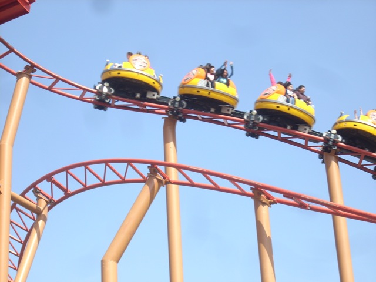
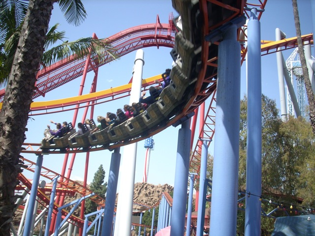
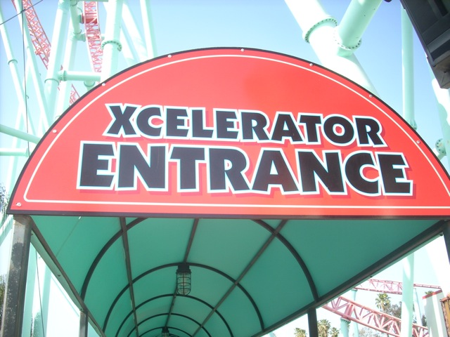
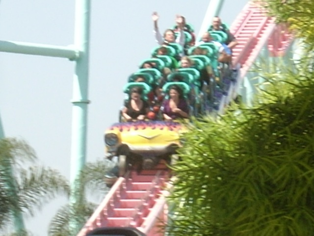

Spring 2009 Photos
Disneyland Resort Knotts Berry Farm
 Hooray. Celeste is tall enough to ride basic rides.
Hooray. Celeste is tall enough to ride basic rides.
Off, and away we go!!!
Good. Nothing important is closed today. (At least for me.)
To make up for no Splash Mtn yesterday, we went on the Timber Mtn Log Ride.
 If you're looking for a big wet adventure, go look somewhere else.
If you're looking for a big wet adventure, go look somewhere else.

Ok, since Ghostrider and Silver Bullet's lines are too long right now, we went on Sierra Sidewinder, which also had too long of a line. (Closing the back of the park when the park opens is a TERRIBLE Idea!)
 Spinning, Spinning. Round and Round.
Spinning, Spinning. Round and Round.
 In General Public Speak, On ride launch means anything slightly scary.
In General Public Speak, On ride launch means anything slightly scary.
 THE ONRIDE LAUNCH!!!! IT'S SO INTENSE!!!!!!!!!!!!
THE ONRIDE LAUNCH!!!! IT'S SO INTENSE!!!!!!!!!!!!
Hi, my name is Celeste and I am disgusted with Cedar Fair. If you sign my imaginary petition, together, we can bring back the Peanuts Playhouse.
 Montezoomas Revenge through the Craptacular Jaguar!!!
Montezoomas Revenge through the Craptacular Jaguar!!!
 Speaking of the Craptacular Jaguar, do you notice that NOBODY is riding it.
Speaking of the Craptacular Jaguar, do you notice that NOBODY is riding it.

Oh wait. That picture was just taken in the morning when Cedar Fair was stacking any ride that wasn't in the front of the park. It still gets some riders despite it being craptacular.
 I see three bigass towers. Do you see three bigass towers?
I see three bigass towers. Do you see three bigass towers?

New at Knotts for 2009!!! New entrance for Xcelerator.

Brand New Entrance. Same Insane Ride.
"THESE STUPID PEOPLE ARE RUINING MY DAY!!! THEY CLOSED THIS RIDE!!!!!"
When I wear these Sunglasses, I turn into SUPER CELESTE!!!! SUPER CELESTE, AWAY!!!!!!!!
Stupid Peice of S**t Boomerang. You ruinied my shot of Peroulis Plunge. (Which is an awsome ride by the way.)
SILVER BULLET MADNESS!!!!!
 News Flash. Silver Bullet now has force. While it's no Kumba, it's still better than how it was 4 years ago.
News Flash. Silver Bullet now has force. While it's no Kumba, it's still better than how it was 4 years ago.
I'm not used to this strange thing called force being here.
On the downside, the ride still fails to resemble a Silver Bullet. There's nothing Silver about it at all!!!!
I'm allowed to play with guns. The 2nd Ammendment says so.
I wanted cake, not Ice Cream. This is the worst day of my life!
Home